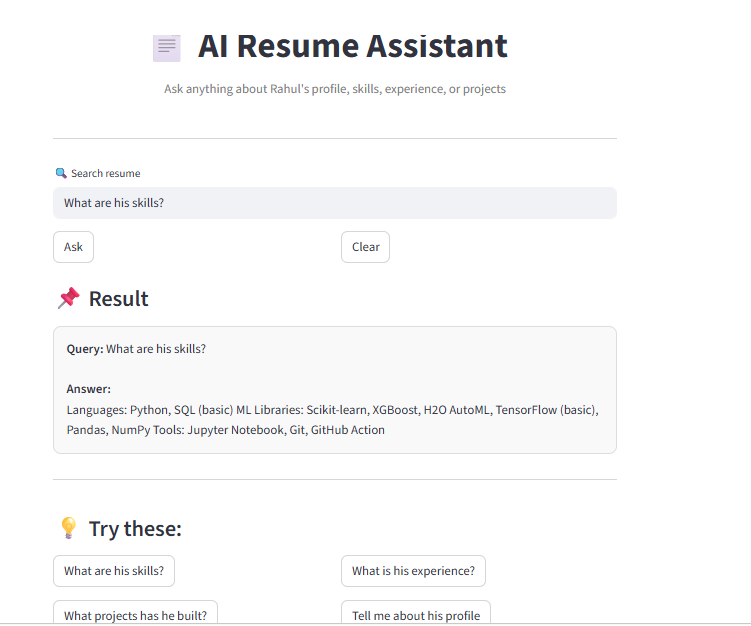

Available for new opportunities

Machine Learning Engineer | RAG Applications · Predictive Analytics · MLOps
I build deployable ML products
end-to-end.
Data professional with logistics operations background and 1+ year of ML internship + project work. I build complete pipelines—from EDA and feature engineering to deployment—focused on practical impact.